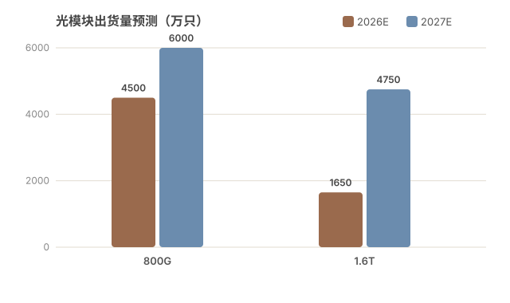

光收发模块行业周报 ｜ 2026年7月1日–7月10日
本期关键词：高景气 · 高波动 · 高分化
AI 算力基建驱动需求高景气，板块高位震荡、估值分化加剧，半年报披露季成为验证产业链真实景气度的关键观测窗口。

一、市场动态
🔹 行业重大事件
- 7月3日｜鹏鼎控股定增 96 亿元：拟募资用于江苏淮安庆鼎「AI 服务器及高速光模块高密度互连积层板（HDI）项目」，项目计划总投资 127.3 亿元，标志上游 PCB 环节加速向高速光模块配套扩产。
- 7月6日｜爱建证券设备行业点评：指出「光模块 PCB 扩产潮起，PCB 设备持续景气」，间接印证光模块产业链资本开支持续加码。
- 7月7日｜光库科技半年报预告：预计上半年归母净利润 1.40–1.50 亿元，同比增长 170%–190%，延续 2025 年以来高增长，高速光器件需求放量兑现。
- 7月7日｜光迅科技启动 H 股上市筹备：授权管理层启动 H 股发行并于港交所上市筹备（有效期 12 个月），深化全球化战略、拓宽融资渠道；公司 2025 年营收突破 119 亿元，2026Q1 净利劲增约 60%。
🔹 主要厂商动向
- 光迅科技：H 股上市筹备 + AI 算力光模块放量，7月9日触及涨停（详见资本市场部分）。
- 光库科技：受益 AI 算力与数据中心建设，持续推出新品、拓展国内外新客户，业绩持续兑现。
- 鹏鼎控股 / 兴森科技：从 PCB/基板环节切入光模块配套，兴森科技拟定增 39 亿元（其中 20 亿投向珠海高阶 mSAP 基板），北京兴斐 1.6T 光模块产品板处于量产爬坡、同步多客户验证导入。
- 中际旭创、新易盛、天孚通信（「易中天」）：仍为板块核心权重标的，但 7 月资金面出现大幅分歧（详见资本市场部分）。
🔹 市场需求变化
- 需求主线：全球 AI 算力基础设施投资加速 + 数据中心建设，高速光模块及光器件市场需求持续增长。
- 迭代窗口开启：随着 GB300、NVL144 标准落地及超大规模 AI Factory 相继投产，全球数据中心网络开启新一轮「800G → 1.6T」扩容周期。
- 出货预测（专家纪要）：2026 年 800G 光模块出货量预计约 4,500 万只，1.6T 冲击 1,500–1,800 万只；2027 年 800G 逼近 6,000 万只，1.6T 直指 4,500–5,000 万只。
🔹 竞争格局
- 高度集中：行业专家纪要显示，头部三大巨头（中际旭创、新易盛、天孚通信）合计瓜分约 90% 市场份额。
- 龙头地位：中际旭创 800G 全球份额约 40%，其 800G 硅光模块市占率居全球第一（约 50%）。
- 路线之争：可插拔光模块（维护方便、成本低、故障率低，Roadmap 可至 3.2T/6.4T/12.8T）与 CPO（共封装光学）并行演进，短期可插拔仍为主力，CPO 处于卡位与标准制定期。
二、技术动态
🔹 新技术 / 产品发布
- 华为发布全球首个单波速率 1.6Tbps 硅光模块：采用第三代硅光子集成技术，体积缩减约 70%，功耗降低约 40%，代表硅光集成代际跃升。
- 京瓷（Kyocera）ECTC 2026 成果：发布集成硅光子学与聚合物波导的宽温域 CPO 光耦合结构，实现 0–70℃ 全温域单通道 32Gb/s（等效 PCIe 5.0）无误码传输，为下一代高性能计算与数据中心提供可行 CPO 方案。
🔹 研发进展
- 中际旭创 1.6T 进度：1.6T 光模块海外重点客户已进入送样测试环节，预计下半年完成认证并进入客户下单，明年规模上量；国内需求目前主要体现于 400G。
- 中际旭创 CPO 卡位：全球首发 1.6T CPO 引擎，集成度达 8Tbps/in²，采用 3D 异构封装，将光引擎与交换芯片（如博通 Tomahawk 5）互联距离缩短至 5mm，信号损耗降低 60%。
- 源杰科技 CW 光源：被市场视为光模块链「种子股」——「全球唯三、大陆唯一」的孤本级期权，受益于 1.6T/硅光渗透率提升对 CW 激光器需求拉动。
🔹 技术标准更新
- OIF（光互联论坛）：中际旭创主导《CPO Implementation Agreement》技术规范制定，持有相干光通信专利超 300 件（较第二名 Lumentum 多约 40%），在标准话语权上领先。
- 互连标准落地：GB300、NVL144 等整机/互连标准相继落地，为 800G→1.6T 升级提供系统级支撑。
🔹 产品迭代情况
- 速率升级：行业正式迈入「800G 向 1.6T 升级」关键期，1.6T 从送样走向认证、量产爬坡。
- 形态演进：可插拔持续迭代（3.2T/6.4T/12.8T Roadmap）与 CPO 共封装并行，硅光渗透率提升成为降本增效核心路径。
- 上游配套：高阶 mSAP 基板、高速光模块 HDI 板扩产，支撑下一代产品规模交付。
三、资本市场动态
🔹 股价表现
- 7月6日｜「易中天」遭大幅净流出：中际旭创净流出 26.47 亿元、新易盛 15.08 亿元、天孚通信 13.98 亿元，合计约 55 亿元单日撤离；当日中际旭创跌 1.53%、天孚通信跌 5.24%、新易盛跌 3.63%。
- 高位回撤：近 10 个交易日中际旭创主力净流出高达 221.1 亿元，11 个交易日市值蒸发约 3,500 亿元，反映机构从高位 AI 硬件链获利了结。
- 7月8日｜板块剧烈博弈：早盘「易中天」高开走高（盘中最高涨幅 5.12% / 4.56% / 3.73%），午后突发直线杀跌，但最终中际旭创当日反涨约 7%，呈现典型「深 V」分歧走势。
- 7月9日｜光迅科技涨停：涨停价 238.49 元（+10%），总市值 1,973.66 亿元，成交额 104.24 亿元（催化：AI 算力光模块 + 定增募资 + 产品技术领先）；同日兴森科技涨停（定增扩产 + mSAP 基板 + 1.6T 光模块）。
🔹 投融资 / 定增
- 鹏鼎控股：拟定增不超过 96 亿元，加码 AI 服务器及高速光模块 HDI 板。
- 兴森科技：拟定增不超过 39 亿元，其中 20 亿元投向珠海高阶 mSAP 基板智能制造及产业化一期，扩大光模块基板产能。
- 光迅科技：启动 H 股发行上市筹备，拓宽海外融资渠道。
🔹 并购消息
- 本周公开渠道未披露光模块主链重大并购事件；产业资本动作以「定增扩产 + 跨界配套」为主（PCB/基板企业向上游光模块配套延伸），机器人等半导体跨界收购多发生于相邻板块，非光模块核心标的。
🔹 分析师观点
- 整体研判：进入 7 月，AI 板块迎来深度回调，光模块、先进封装、MLCC 等核心赛道龙头普遍回撤 15%–30%，「泡沫论」「见顶论」抬头；但多数机构认为半年报披露季才是验证产业链真实景气度的关键窗口。
- 估值分化：光模块链标的 TTM PE——源杰科技 265 倍、天孚通信 122.6 倍、中际旭创 81.89 倍、新易盛 65.81 倍；按 2026E 动态 PE——中际约 41 倍、新易盛 29–38 倍，估值消化压力与业绩兑现预期并行。
- 主线判断：方正证券维持「2026 通信板块以 AI 算力主线为核心」，看好光通信、IT 设备、电源、液冷等结构性机会；部分观点认为资金正从「GPU+光模块+服务器」硬件组合，向承载算力生产的 AIDC（人工智能智算中心）主线迁移。
- 关键观测：中际旭创 7月7日收盘总市值约 12,511.82 亿元（PE TTM 83.70 倍），机构一致预期其 800G/1.6T 量价共振，但高估值需持续超预期的业绩消化。
四、总结与展望
本周核心判断：光收发模块行业处于「需求高景气、股价高波动、估值高分化」的三高状态。产业基本面（AI 算力基建 + 800G/1.6T 迭代）确定性仍强，但资本市场在半年末机构获利了结、海外算力开支预期扰动下出现显著分歧，板块呈现高位震荡、资金大进大出特征。
- 短期（1–2 个月）：半年报披露季是核心观测窗口，业绩能否兑现高增预期将决定估值能否企稳；板块或延续高波动，需警惕高位回撤与资金跷跷板效应（向 AIDC 等低位主线迁移）。
- 中期（半年维度）：需求端 800G 持续放量、1.6T 于 2027 年规模上量，出货预测支撑景气延续；技术端硅光渗透率提升、CPO 从标准走向商用，头部厂商凭借专利与份额构筑壁垒；格局端三大巨头约 90% 份额集中度高，但上游 PCB/基板、CW 光源等环节涌现新进入者与配套机会。
- 主要风险：① 估值处于历史高位，若业绩不及预期将放大回调；② 海外超大规模客户资本开支预期扰动；③ CPO 替代节奏超预期，冲击可插拔主力产品出货；④ 地缘政治与贸易政策对供应链及出口的影响。
本周报覆盖 2026-07-01 至 2026-07-10 公开报道，数据来源包括公开财经媒体、券商研报、公司公告及行业专家纪要（检索日期 2026-07-10）。本报告为行业信息汇编，不构成投资建议。内容由 Content Creator 整理。